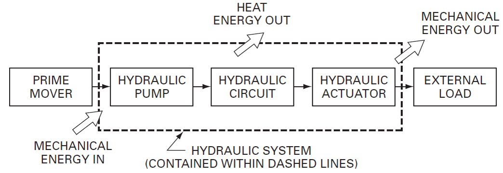
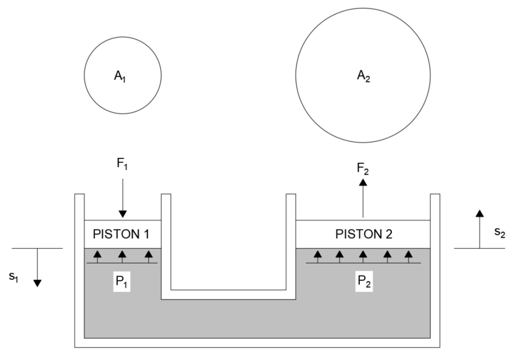
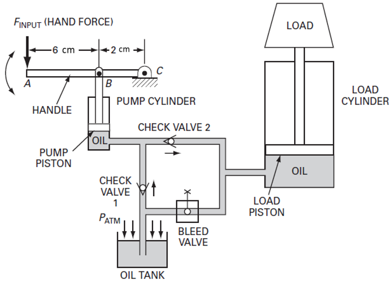
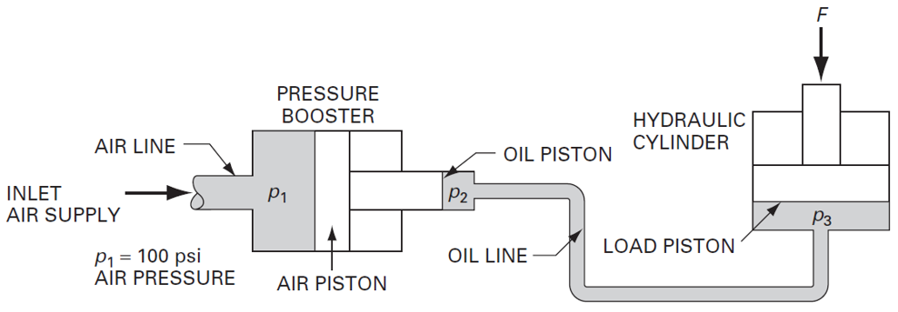

If you can make more energy come out than goes in, you will win every Nobel prize for the next century, including the prize for Economics and Literature.
If you can make a system 100% efficient, congratulations. You have broken the universe and we have to reset.
Figure 1 below shows the flow of energy through a typical hydraulic system. The main losses on the way to the load are mechanical and fluid friction, together with some energy loss due to sound from vibration due to fluid flow.
Figure 1
Some revision of basic definitions will help us understand how hydraulic power systems work.
Work Done, W (J) is defined as force, F (N) times distance, s (m). The unit is therefore Nm.
how much force did you exert and for how far?
Work done in a circular motion is similar same concept, except this time we call the force, torque, T (Nm) and we multiply it with dimensionless radians, \theta to calculate the work done.
how much load were you carrying and how many times did you spin?
Power,(Watts or W) is the rate of doing work. The faster you work, given the same amount of work done, the more powerful you can be said to be. Power is also often given in units of horsepower or HP. This the same kind of horsepower as used to describe aircons and cars.
how quickly did you do the work?
Because of the nature of angular velocity, work done and power in relation to torque requires us to play with radians.
Let's take a closer look at the relationship between power and work done. Work done, W is given by the equation :
W = Fs
Since power is work done over time:
Power = \frac{Fs}{t}It is also useful to note that \frac{s}{t} is velocity, v. So power can also be expressed as
Power = Fv
A person exerts 130 N of force to move a hand truck by 30 m in 60 s.
a) How much work has he done?
b) How much power is delivered by the person?
As in linear power, rotational power requires us to know the how fast the work is being done. Since it is rotating, we need to know the angular velocity, \omega (rad/s).
Rotational power is often described in horsepower or HP. One horsepower is equivalent to 746 W.
\begin{array}{ll} Power = \tau \omega\\ \\ where\\ \\ F = force\ (N) \\ \tau = torque\ (Nm) \\ \omega = angular\ velocity\ (rad/s) \end{array}
A 2 horsepower hydraulic motor is running at 1800 rpm.
a) What is the power of the motor in watts?
b) What is the speed of the motor in rad/s?
c) How much torque is the hydraulic motor producing?
No system in the world is 100% efficient. There will always be losses. As engineers, one important function we have is to design a system to be as efficient as (practically) possible. Here are some of the effects of an inefficient system:
In hydraulic power systems, these losses in efficiency typically come from a few sources:
Efficiency uses the symbol \eta and can be defined as output power divided by input power:
\eta = \frac{output\ power}{input\ power}The input power can be determined from the prime mover (usually an electric motor or ICE engine etc.) driving the system; and the output power can be determined from the load that the system is trying to overcome e.g. lifting a car. When determining the total efficiency of a system. it is important to note that the prime mover has its own power losses, making calculations easy to confuse. We discuss this further in Chapter 4: Hydraulic Pumps and Actuators.
An elevator raises a 3000 N load up 50 m in 10 s. If the efficiency of the system is 80%, how much input power is required by the motor?
Pascal's Law states that when pressure is applied to a confined fluid, the pressure change is transmitted equally and undiminished in all directions throughout the fluid. This concept is the core principle behind hydraulic power. If we can apply pressure on one part of the system, the fluid will apply that pressure everywhere else. If we make part A and part B moveable, we have a hydraulic power system.
Recall that pressure is force divided by area. Since the pressure applied is equally throughout the system, we can change the area of part B, changing the resulting force. This is illustrated by Figure 2 below.

Figure 2
A is the area of the pistons, S is the distance each piston travels, and F is the force at each piston. The magic of Pascal's Law means that we can input a smaller force on A_1 and obtain a larger force at A_2. However, this magnification of force is not for free. The extra force comes at the exchange of less displacement. If A_2 is larger than A_1, s_2 also has to be larger than s_1. This is analogous to mechanical advantage in levers and gears.
Another way to approach the problem is by understanding that the distance covered by the piston times the area gives us a volume, V. We represent the volumes covered by both pistons:
V_1 = V_2
since volume is area, A, times displacement, s:
A_1s_1=A_2s_2
which we can rearrange to:
\frac{A_1}{A_2}=\frac{s_2}{s_1}The following data is given for the hydraulic system shown in Figure 2.
A_1 = 0.2\ m^2\\ A_2 = 0.75\ m^2\\ s_1 = 200\ mm\\ F_1 = 100\ N
Determine F_2, s_2, the work put into the system, and the work done by the system.

Figure 3
Figure 3 shows the circuit diagram for a hand-operated hydraulic hand jack. One complete cycle consisting of one draw stroke and one pump stroke is completed per second. The pump cylinder has a 1 cm diameter piston and the load cylinder has a 3.25 cm diameter piston. If 25 N of force is delivered during the power stroke, which has a stroke length of 20 mm, determine:
Pascal's Law is applied in air-to-hydraulic pressure boosters, where a workshop might only have pneumatic air systems but still require the higher forces of hydraulic power. By only using a dedicated booster unit, a workshop only needs a pneumatic system which is cheaper and easier to maintain.
An air-to-hydraulic booster consists of a piston with the larger diameter side under pneumatic pressure, and the smaller diameter side connected to a hydraulic line. The force generated by pneumatic pressure is transferred by the piston to the hydraulic line i.e. F_{air} = F_{hydraulic}. Given the formula for pressure, P = \frac{F}{A}, we see that as A \downarrow, P \uparrow. P_{hydraulic} is thus higher than P_{air}. The hydraulic line transfers this pressure to the load piston, where the the force is amplified by the smaller diameter of the output side.

Figure 4
Figure 4 shows the hydraulic circuit of an air-to-hydraulic booster. P_1 is given as 700\ kN/m^2, the air piston area on the pneumatic side, A_1 = 20\ cm^2 , the air piston area on the hydraulic side, A_2 = 1\ cm^2, and the load piston area, A_3 = 25\ cm^2. Find the force exerted by the load piston.
The continuity equation states that for a fluid system, the mass flow rate, \dot m (kg/s) must be conserved, i.e. \dot m_1 = \dot m_2. Given a steady, incompressible flow, the continuity equation can be expressed as:
\rho A_1v_1 = \rho A_2v_2
For an incompressible fluid, the density, \rho remains constant and cancels out. We are left with Av, which is volumetric flow rate, Q. We relate all these concepts in the equation:
Q_1 = A_1v_1 =Q_2 = A_2v_2
In 1738, Daniel Bernoulli developed Bernoulli's Principle, which linked height, pressure, and velocity in fluid flow. It states that for a steady, incompressible, and frictionless flow, the total energy remains constant. The components of energy in the flow of fluid given by Bernoulli's Principle are:
Since the sum of the components of energy must be equal at all points along the fluid flow, for any 2 points, we can formulate Bernoulli's Principle as:
WZ_1 + W \frac{P_1}{\gamma} + W \frac{v^2_1}{2g} = WZ_2 + W \frac{P_2}{\gamma} + W \frac{v^2_2}{2g}assuming incompressibility, W of the fluid remains constant and cancels out, leaving:
Z_1 + \frac{P_1}{\gamma} + \frac{v^2_1}{2g} = Z_2 + \frac{P_2}{\gamma} + \frac{v^2_2}{2g}This equation neatly solves into units of m, also known as head. Z is called elevation head, \frac{P}{\gamma} is called pressure head, and \frac{v^2}{2g} is called velocity head. The table below compares the type of head and their meaning.
| Energy Component | Expression | Type of Head | Meaning |
|---|---|---|---|
| Potential Energy (EPE) | Z | Elevation Head | Physical height of the fluid relative to a reference point. |
| Pressure Energy (PPE) | \frac{P}{\gamma} | Pressure Head | Height of a fluid column that exerts the same pressure ( P ). |
| Kinetic Energy (KE) | \frac{v^2}{2g} | Velocity Head | Height equivalent to the fluid's velocity energy. Faster flow = higher head. |
What this means is, we can express the energy in the system using a standard description.
Hydraulic power (or hydraulic horsepower) refers to the power delivered to the hydraulic actuator. Power is work done per time, and work done is force times distance. Hence, for a linear actuator, we can describe power as:
how much force (F)? push how far (s)? how fast did you do it (t)?
Power = \frac{Fs}{t} \quad (1)Recalling that pressure, P = \frac{F}{A} and rearranging for F to get F = PA, we substitute this into (1) to get:
Power = \frac{FA\ s}{t}\frac{s}{t} is velocity, v, giving us:
Power = FA\ v \quad (2)
Next, we recall that Q = Av, which we substitute into (2) to give us the formula for hydraulic power:
Power = P \times Q